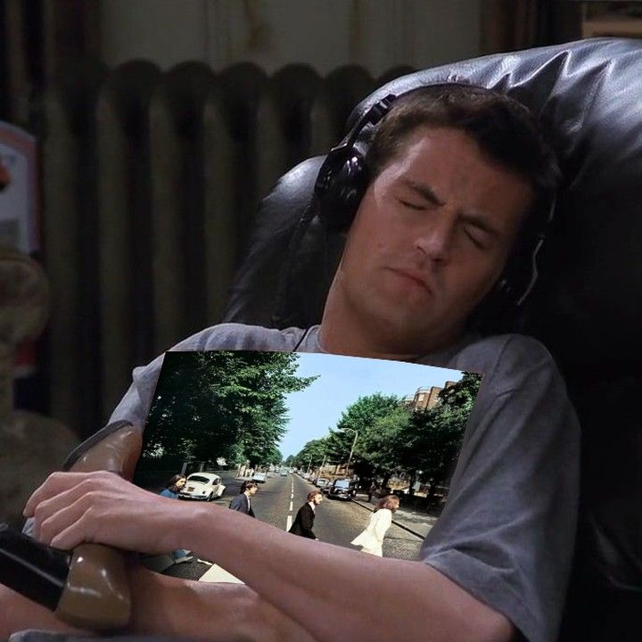

Melhores Trilhas Sonoras
A música de Dirty Dancing
Dirty Dancing(1987) é maravilhoso. Eu sou muito suspeita para falar, tenho toda uma história com esse filme que me marcou de muitas formas. Pelo menos uma vez ao ano eu revejo-o e só me apaixono mais por tudo nele. Claro que isso é bem pessoal, mas uma coisa não pode ser negada, a trilha sonora de Dirty Dancing é uma das coisas mais incríveis do cinema. clique aqui para continuar

Beatles e trilhas sonoras
Uma das trilhas sonoras que está no meu dia a dia é do filme Yesterday(2019), pelo nome já pode imaginar do que se trata. Fãs dos Beatles já devem ter entendido. A trilha sonora é toda, claro, com músicas dos Beatles, mas cantadas por Himesh Patel, o protagosnista em meio a uma história muito interessante. clique aqui para continuar